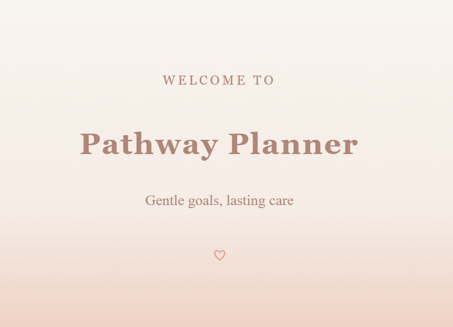
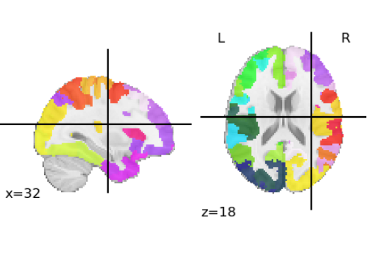

Hi! Welcome!
I'm Elif
Computer Science student with experience in Python, C++, C, React, JavaScript, and machine learning workflows through research and projects. Passionate about software development and AI, with strong problem-solving, analytical, and time-management skills. Fluent in Turkish and English, bringing adaptability and a global perspective to technical challenges.
About Me
Education
Middle Tennessee State University
Murfreesboro, TN
Bachelor of Science : Computer Science
Aug 2024 - May 2027
GPA: 4.0 / 4.0
Columbia College
Columbia, MO
Bachelor of Science : Computer Science
Aug 2023 - May 2024
GPA: 4.0 / 4.0
Relevant Coursework
Discrete Structures
Data Structures and Algorithms
Computer Systems
Assembly and Computer Organization
Database Management
Artificial Intelligence
Skills
C++
C
Pyhton
JavaScript(React,Node.js)
HTML / CSS
NumPy
SciPy
Matplotlib
POSIX
Sockets
Experiences
Middle Tennessee State University Business & Economic Research Center
Research Assistant
Conducted data collection, statistical analysis, and business surveys for economic research projects at MTSU’s Business and Economic Research Center, translating findings into policy briefs and reports that informed regional and national economic decision-making.
Middle Tennessee State University Undergraduate Research Center
Student Researcher - Buchanan Fellow
Selected for MTSU’s URECA (Undergraduate Research Experience and Creative Activity) program to conduct faculty-mentored research in computer science, with a focus on applying programming skills to neuroscience-related data analysis.
Middle Tennessee State University
Information Technology Help Desk
Providing front-line technical support at MTSU’s IT Help Desk, assisting students, faculty, and staff with troubleshooting hardware/software issues, account management, and service requests. Utilize tools such as Active Directory, remote desktop software, and ticketing systems to ensure efficient and professional resolution of technical problems.
Girls' Scouts
Troup Volunteer
Assisting kids with troop badge-earning. Helping kids to improve their art skills. Navigating kids to build social skills through events and activities.
Turkish American Society of Missouri
Turkish Teacher/Volunteer
Delivered Turkish language instruction to Turkish-American youth by designing adaptive lessons and interactive activities, improving language confidence and supporting cultural heritage retention.
Projects
Pathway Planner : Full Stack Chronic Care Management App

React · Node.js · Prisma · MySQL · REST
Role-based chronic care management app with patient tracking, clinician workflows, and real-time dashboards.
Review ProjectGalaxia Game Recreation
C++ · SDL · OOP
2D arcade-style game built in C++ using SDL, focused on performance and object-oriented design.
Review ProjectQuizzie: Multi-Threaded Client–Server Quiz Application
C · POSIX Sockets · pthreads · Semaphores
Concurrent client–server quiz system using POSIX sockets and threads to handle multiple users safely
Review ProjectDefault Mode Network Analysis Using Resting-state fMRI

Python · NumPy · pandas · scikit-learn · SciPy · matplotlib
A data-driven analysis of Default Mode Network communication differences in ASD using large-scale neuroimaging datasets.
View ResearchLet's Connect!
Open to research roles and internships.